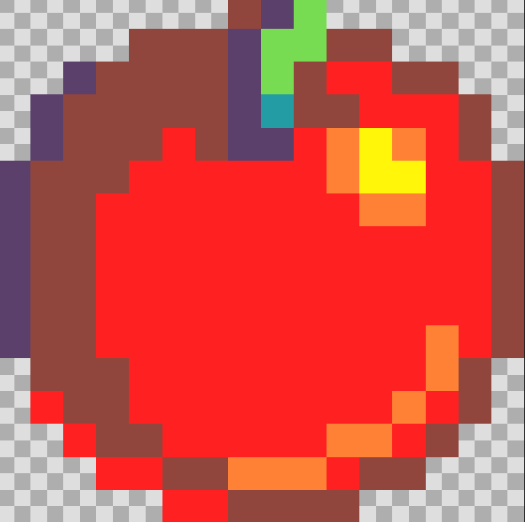
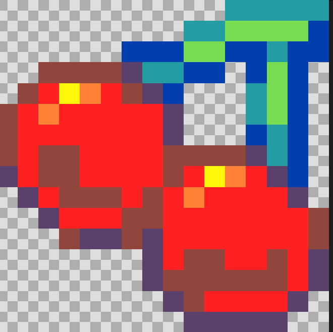
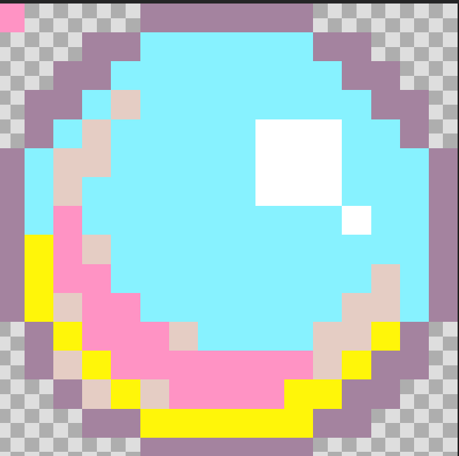

| SAGARRA |  |
Hau lehenengo mapan aterako den bakarra izango da; bigarren mapara pasatzerakoan ez dituen sagarrak hartzen, beste mapara ere pasatuko da. Honen helburua jokoa bukatzeko 30 lortu behar dira. |
| GEREZIA |  |
Hauek bakarrik bigarren mapan aterako dira, bakoitzak puntu bat balioko du. Hauek ere balioko dute 30era heltzeko jolasa bukatzeko. |
| PERLA |  |
Printzesa perla artzen badu bizitza gehiago lortuko ditu. |